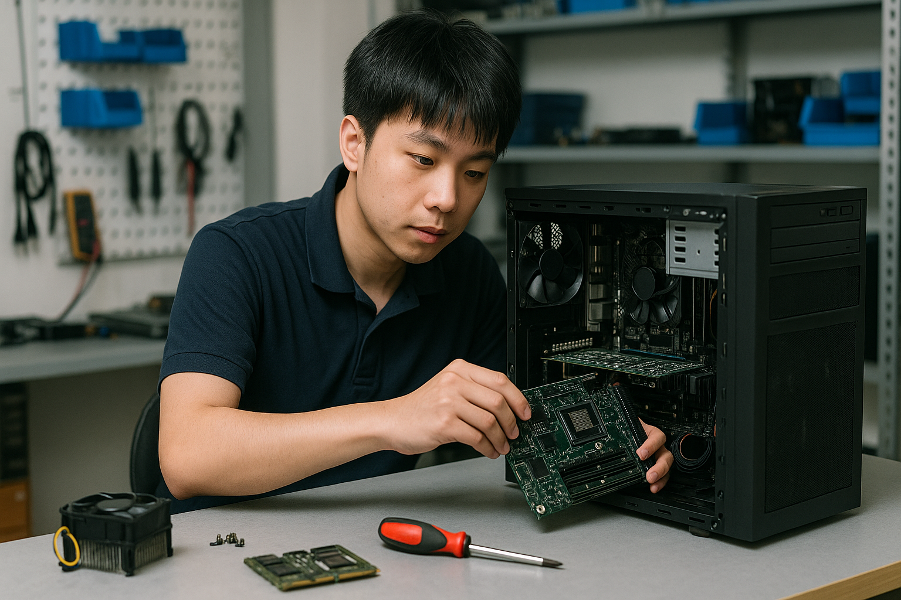
桌上型電腦硬體維修與客製化組裝
專業桌上型電腦（PC）與精緻電競主機故障排除。無論是主機板晶片級更換、高階顯示卡升級、或是客製化全功能液冷排散熱系統（AIO水冷）優化調整，我們均採用高規格檢修儀器並提供最透明化的詳細工料報價。
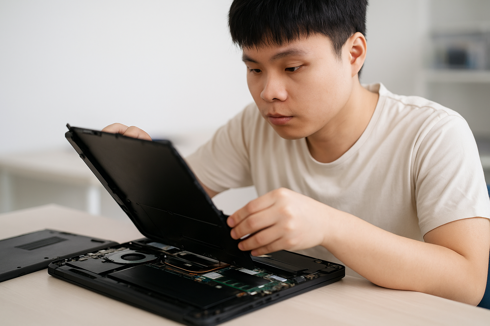
筆記型電腦專業精密維修
專修各大廠牌筆記型電腦（Laptop）。包含高畫質面板液晶破裂更換、鍵盤模組失效修復、過熱自動斷電深層清潔更換散熱膏、變壓器插孔鬆脫焊接，以及機構件主體外殼、軸承斷裂等疑難雜症修復。
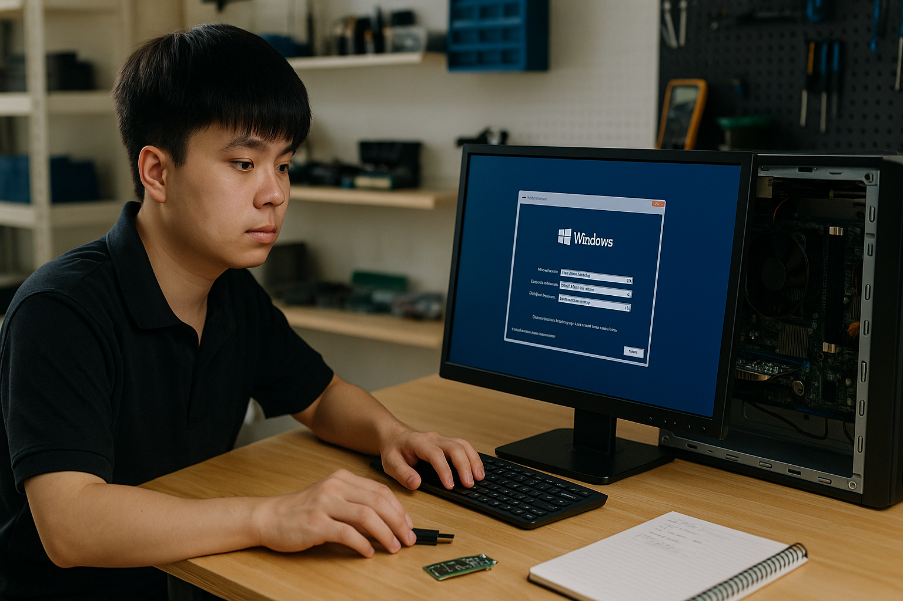
作業系統重灌、環境建置與系統效能優化
完整導入正版認證作業系統（Windows/Linux）重灌部署。一併進行硬碟分區最佳化、系統安全性補丁更新、核心防毒防護設定、基本常用辦公與影音軟體環境建置，並深度清除開機冗餘啟動項，讓主機效能達到全新巔峰。
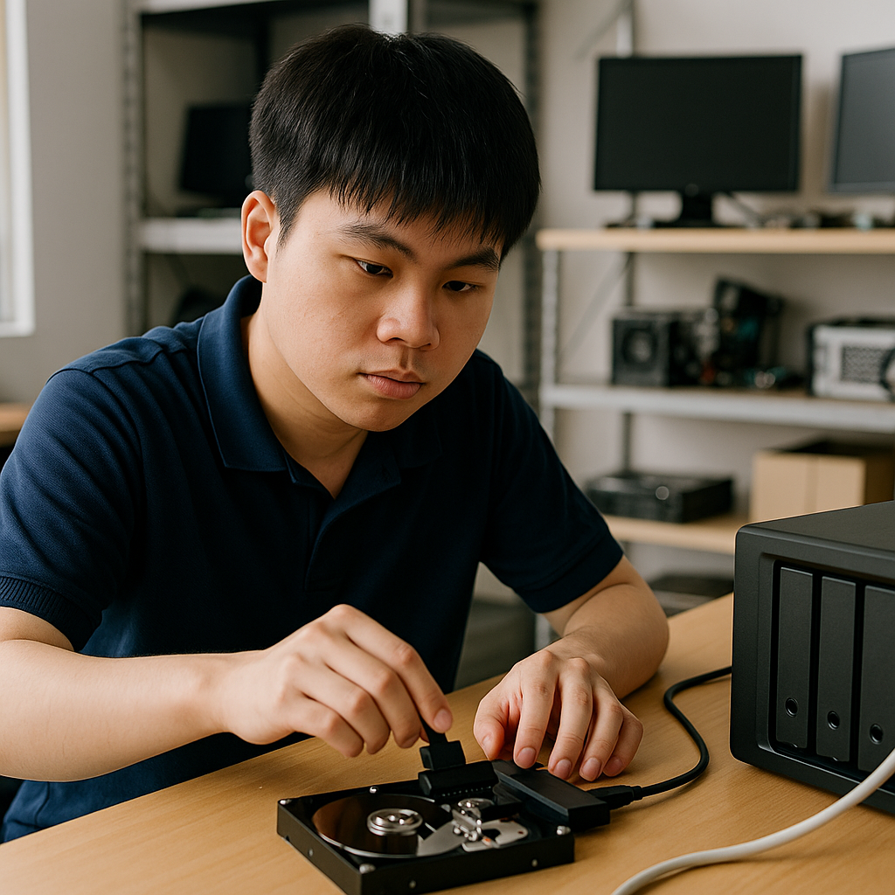
關鍵數據資料救援與自動備份規劃服務
引進精密級資料救援專用設備，針對誤刪除、格式化、或是硬碟損壞、異音等狀況進行硬體層級檔案搶救（涵蓋傳統HDD、行動硬碟與SSD）。並針對中小企業或個人設計客製化 NAS 雲端備份或異地自動排程備份方案，徹底杜絕資料遺失風險。
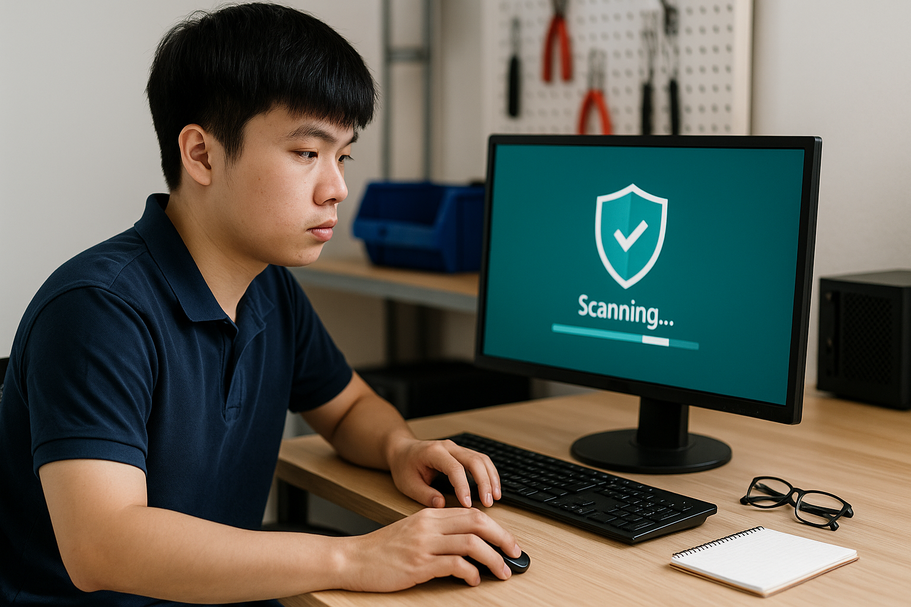
惡意病毒清除與網路資安主動防禦
全面清除各類勒索軟體、間諜木馬及頑固流氓廣告軟體。協助建置防火牆規則與主動式防毒防護牆，修補系統核心安全漏洞，並提供使用者基礎資安觀念宣導，全面阻斷駭客惡意侵入窗口。
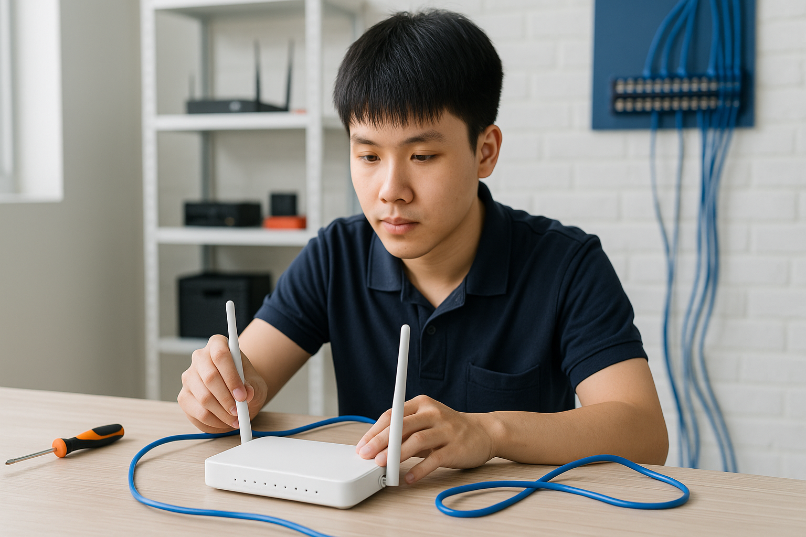
企業IT外包與辦公室網路佈線工程
專為中小企業設計的定期資訊委外維護。提供專業網線佈建工程、高速網路交換器（Switch）與強效無線 AP 配置優化，建立穩定不掉線的企業區域網路（LAN），讓團隊辦公協作更具效率。
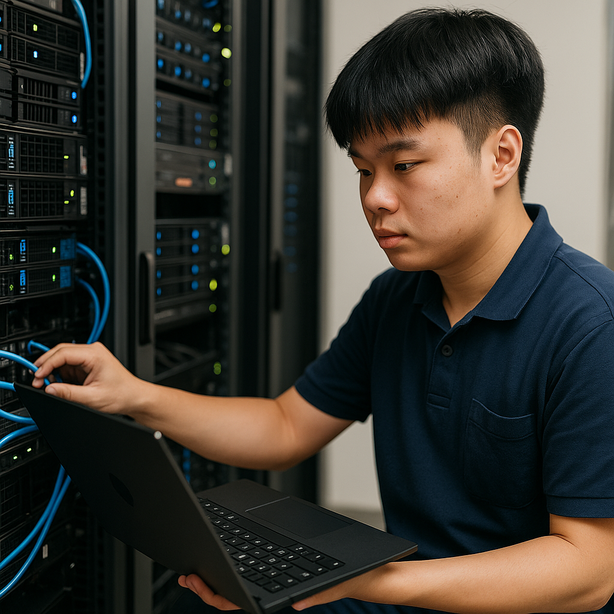
點陣印表機維修與耗材周邊更換
專精發票、出貨單等關鍵點陣式印表機檢修（如 EPSON 等各大品牌）。解決卡紙、斷針、進紙故障等痛點，並提供高密度耐磨色帶、精選週邊耗材的即時更換，維持企業商務流暢運作。
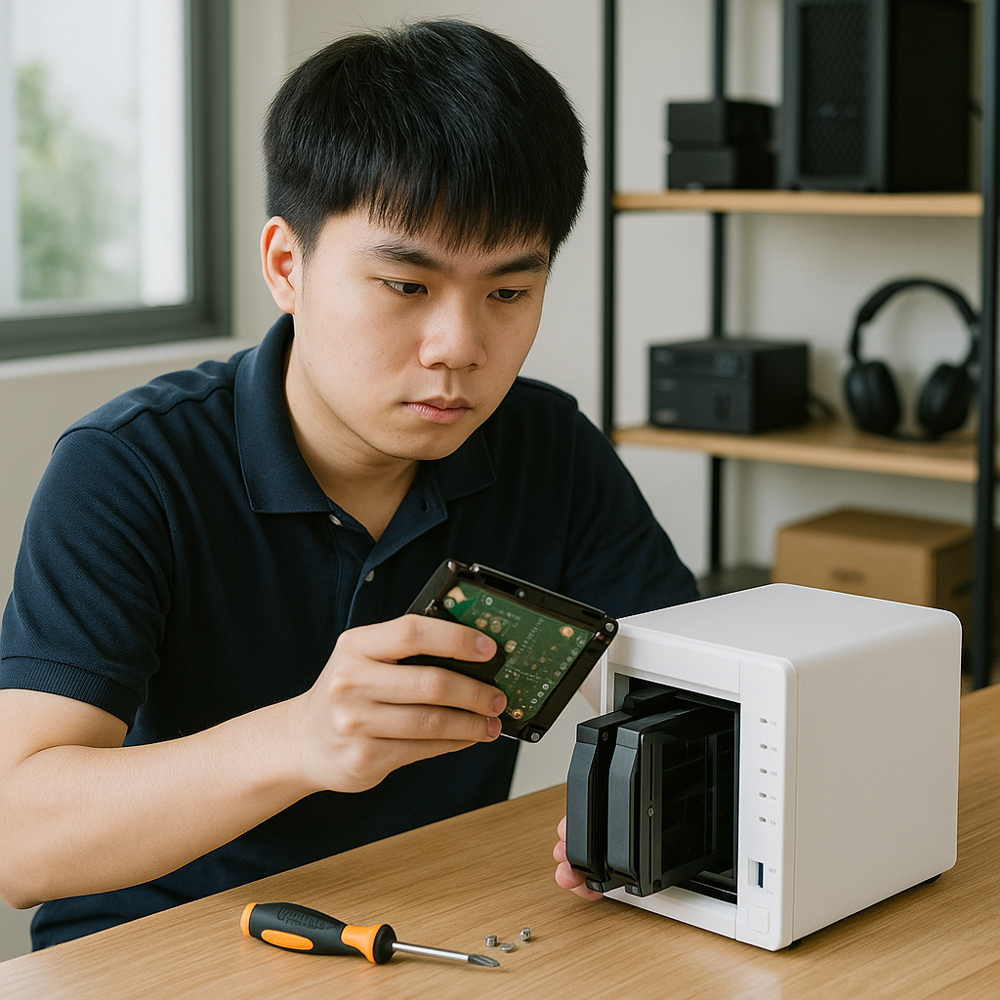
中小企業專屬主機與伺服器建置
針對中小企業環境部署高效能專屬工作站、檔案伺服器、內部 ERP/進銷存系統硬體建置。量身打造具備高可用性與容錯機制（RAID）的硬體架構，滿足業務持續擴展的數據儲存需求。
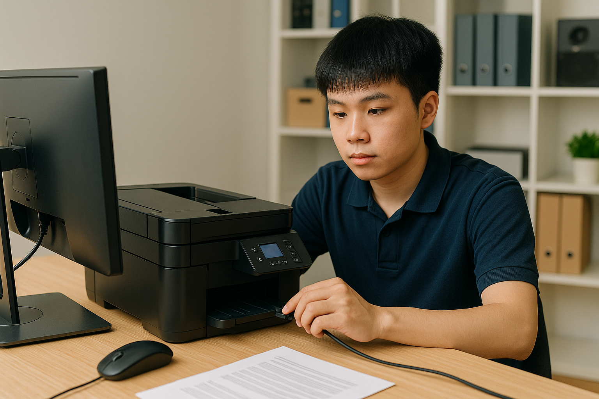
專業影音剪輯與高階電競主機量身訂製
針對 4K/8K 影音剪輯師、3D 設計師及重度電競玩家提供最高規格的組裝客製服務。精準配置處理器（CPU）與獨立顯卡算力，確保渲染流暢不卡頓，給您極致的運算與遊戲體驗。
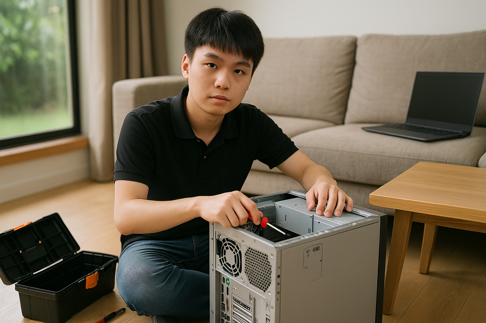
螢幕顯示器故障修復與檢測服務
專業液晶螢幕與商用顯示器維修。針對螢幕無法開機、電源燈閃爍、畫面異常黑屏、閃爍或色偏等問題進行細緻檢修，延長優質硬體的使用壽命，落實高性價比的辦公修繕體驗。
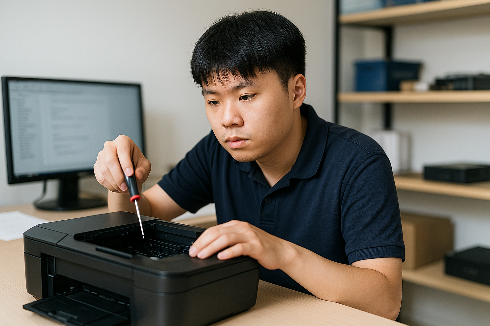
到府電腦故障初檢與急件排除服務
針對三峽、鶯歌、樹林、土城周邊客戶提供貼心的到場初檢響應。不論是辦公室網路突然中斷或主機突發死機，工程團隊能提供即時到現場的初步障礙排除與緊急技術支援。